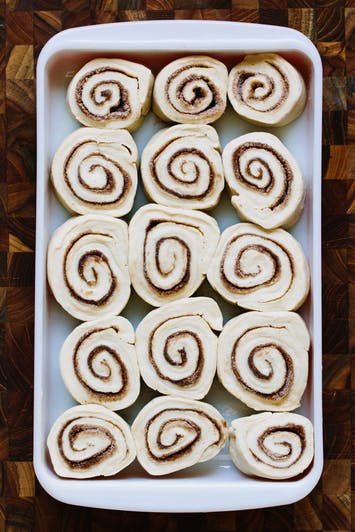

Other cinnamon roll recipes that we love!
Ingredients
Rolls
- 2 and 3/4 cups (345g) all-purpose flour, divided
- 3 Tablespoons granulated sugar
- 1 teaspoon salt
- 1 packet yeast (1 packet = 2 and 1/4 teaspoons)
- 1/4 cup (60ml) milk
- 3 Tablespoons unsalted butter
- 1 large egg
Filling
- 3 Tablespoons (45g) unsalted butter, softened to room temperature
- 1 Tablespoon ground cinnamon
- 1/4 cup (50g) granulated sugar
Method
- Make the dough: Set aside 1/2 cup of flour. In a large bowl, toss the 2 and 1/4 cups flour, the sugar, salt, and yeast together until evenly dispersed. Set aside.
- Heat the water, milk, and butter together in the microwave until the butter is melted and the mixture is hot to touch. About 115°F (46°C). Stir the butter mixture into the flour mixture. Add the egg and only enough of the reserved flour to make a soft dough. I only needed 1/3 cup, but you may need the full 1/2 cup. Dough will be ready when it gently pulls away from the side of the bowl and has an elastic consistency.
- On a lightly floured surface, knead the dough for about 3-4 minutes. Place in a lightly greased bowl (I used non-stick spray) and let rest for about 10 minutes.
- Make the filling: After 10 minutes, roll the dough out in a 14x8 inch rectangle. Spread the softened butter on top. Mix together the cinnamon and sugar and sprinkle it all over the dough. Add more cinnamon/sugar if desired. Roll up the dough tightly. Cut into 11-12 even pieces and place in a lightly greased 9-inch round pan. I used a pie dish, lightly sprayed with nonstick spray.
- Loosely cover the rolls with aluminum foil and allow to rise in a warm, draft-free place for 60-90 minutes. Here is what I do: heat the oven to 200°F (93°C). Turn oven off. Place rolls inside oven and allow to rise.
- After the rolls have doubled in size, preheat the oven to 375°F (190°C). Bake for 25-30 minutes until lightly browned. I covered the rolls with aluminum foil after 15 minutes to avoid heavy browning.
- Make the glaze: Right before serving, top your cinnamon rolls with glaze. Mix the confectioners' sugar, vanilla and 2 Tablespoons coffee together until smooth and drizzle over rolls. If it seems too thick, add 1 more Tablespoon coffee. You can replace the coffee with milk or cream instead, if you do not want a coffee flavored glaze. If you prefer a thicker glaze, add more confectioners' sugar and then add a pinch of salt to cut the sweetness, if desired.
- Rolls are best enjoyed the same day, but stay fresh and soft in a covered container at room temperature or in the refrigerator for 5 days. Glaze the rolls immediately before serving. Rolls (with or without glaze) freeze well, up to about 3 months. Thaw in the refrigerator and heat up however you prefer.
Feedback!